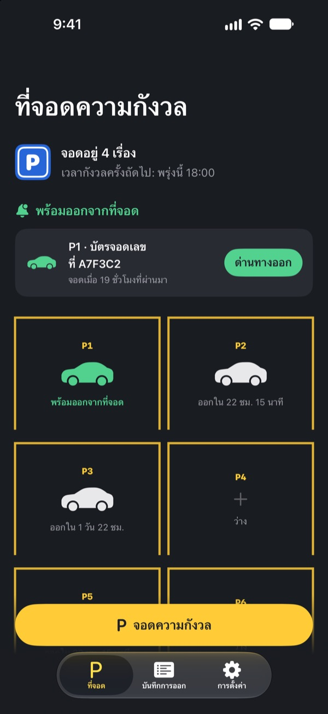
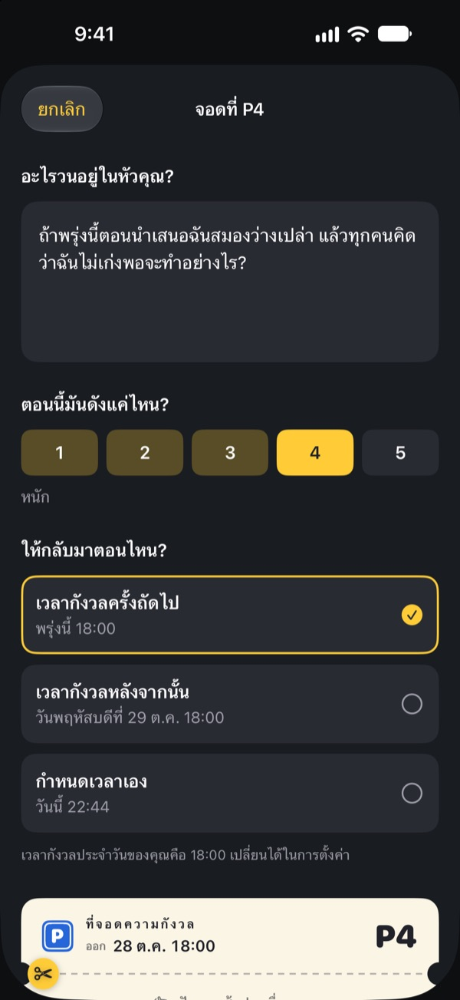
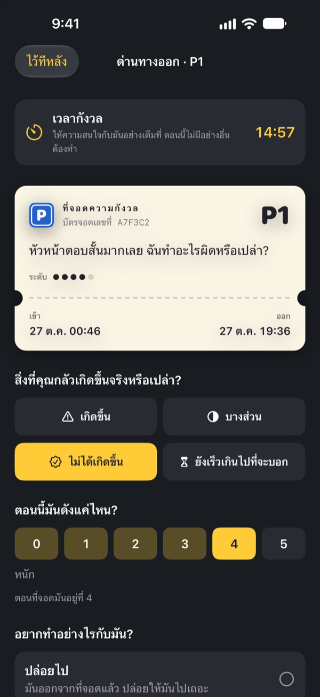
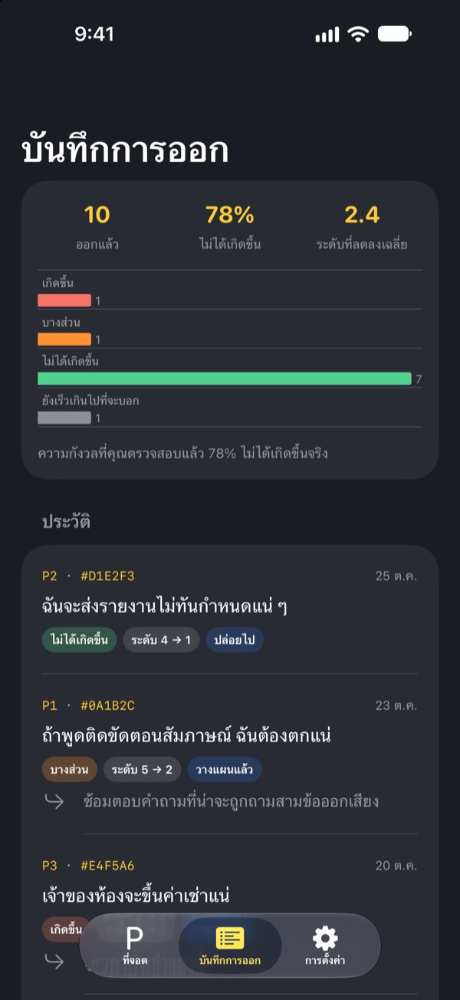

จอดความกังวลไว้ก่อน
แล้วค่อยมารับ
เขียนสิ่งที่วนอยู่ในหัวก่อนนอนลงบนบัตรจอดรถแล้วฝากไว้ พอถึงเวลากังวลเราจะคืนให้ ระหว่างนี้คุณไม่ต้องแบกมันไว้
ทุกฟีเจอร์ใช้ฟรี ไม่มีโฆษณา ไม่ต้องสมัครบัญชี

ลองจอดความกังวลสักเรื่อง
ใช้ตัวอย่างนี้ หรือพิมพ์เรื่องที่อยู่ในหัวตอนนี้ก็ได้ เมื่อจอดแล้วข้อความจะเบลอ แล้วค่อยหยิบออกมาดูในเวลากังวล
ปิดไฟแล้ว แต่หัวยังไม่หยุดคิด?
พอหัวถึงหมอน ทุกอย่างก็เริ่ม คำพูดเมื่อกลางวัน ประชุมพรุ่งนี้ ข้อความที่ยังไม่มีใครตอบ ยิ่งบอกตัวเองว่าอย่าคิด เสียงยิ่งดังขึ้น ที่จอดความกังวลไม่ได้ให้คุณผลักมันออกไป แค่เขียนลงไป ให้มันมีที่จอด แล้วกันเวลาไว้จัดการโดยเฉพาะ
เขียนแล้ว ก็วางลงจากหัวได้
เขียนให้เหมือนที่ได้ยินในหัว แล้วเลือกว่าตอนนี้มันดังแค่ไหน ตั้งแต่ 1 ถึง 5 ฉีกบัตรจอดรถ แล้วความกังวลจะถูกเบลอไว้ในที่จอด
ถ้ามันวนกลับมาอีก บอกมันว่า เธอมีที่จอดแล้ว ถึงเวลาจะมาดูให้ แต่ไม่ใช่ตอนนี้

ใช้แค่ 15 นาทีในเวลากังวล
ทุกวันเมื่อถึงเวลากังวลจะมีการเตือน ที่ด่านทางออก คุณอ่านความกังวลอีกครั้ง ดูว่ามันเกิดขึ้นจริงไหม และตอนนี้ยังดังแค่ไหน
จากนั้นปล่อยมันไป เปลี่ยนให้เป็นก้าวเล็กๆ ถัดไป หรือจอดไว้อีกครั้งจนถึงเวลากังวลรอบหน้า

เห็นว่าความกังวลเป็นจริงบ่อยแค่ไหน
ยิ่งออกจากที่จอดมากเท่าไร บันทึกการออกก็ยิ่งบอกชัดว่ามีกี่เรื่องที่เกิดขึ้นจริง และความแรงลดลงเท่าไร
ความกังวลมักคาดอนาคตแย่กว่าที่เป็นจริง ยิ่งบันทึกมาก ก็ยิ่งเชื่อความกังวลเรื่องถัดไปน้อยลง

เริ่มได้ใน 3 ขั้นตอน
- 1
เลือกเวลากังวลของคุณ
ตอนเปิดครั้งแรก เลือกเวลาที่จะจัดการความกังวลในแต่ละวัน เปลี่ยนทีหลังได้ในการตั้งค่า
- 2
จอดความกังวลจริงสักเรื่อง
จอดเรื่องที่อยู่ในหัวตอนนี้เลย แล้วสังเกตว่าความแรงก่อนและหลังต่างกันอย่างไร
- 3
อนุญาตการเตือนออกจากที่จอด
เมื่อถึงเวลากังวล จะมีการเตือนที่บอกแค่หมายเลขช่องจอด
ทำไมถึงได้ผล
- กังวลแค่ในเวลาที่กำหนด
- คนที่ย้ายความกังวลไปไว้ในช่วงสั้นๆ ของแต่ละวัน กังวลน้อยลง และมีปัญหาความวิตกกังวลกับการนอนน้อยลง (Borkovec และคณะ, 1983; McGowan & Behar, 2013)
- เขียนเพื่อวางลง
- การวางแผนที่ชัดเจนช่วยไม่ให้งานค้างแทรกเข้ามาในความคิด และคนที่เขียนสิ่งที่ต้องทำ 5 นาทีก่อนนอนหลับได้เร็วขึ้น (Masicampo & Baumeister, 2011; Scullin และคณะ, 2018)
- ตรวจดูว่าเกิดขึ้นจริงไหม
- เมื่อคนที่กังวลเรื้อรังจดบันทึกความกังวลของตัวเอง 91% ไม่ได้เกิดขึ้นจริง (LaFreniere & Newman, 2020)
ที่จอดความกังวลอิงการเลื่อนความกังวล เทคนิคจากการบำบัดทางความคิดและพฤติกรรม (CBT) ที่มีการศึกษามาหลายสิบปี
ทุกฟีเจอร์ใช้ฟรี
ฟรี
- ช่องจอดไม่จำกัด
- เตือนเวลากังวลทุกวัน และเลือกเวลาออกเองได้
- ด่านทางออกและบันทึกการออก
- ข้อมูลเชิงลึกการออก: กี่เรื่องที่เกิดขึ้นจริง ความแรงลดลงเท่าไร
ทิป (ถ้าอยากให้)
- ถ้าแอปช่วยคุณได้ ส่งทิปเล็กๆ ให้นักพัฒนาได้
- เลือกได้ทั้งเล็ก กลาง หรือใหญ่
ทิปไม่ได้ปลดล็อกอะไร ไม่ให้ทิปก็ใช้ได้ทุกฟีเจอร์เหมือนเดิม
ไม่มีโฆษณา ไม่มีบัญชี ไม่มีเซิร์ฟเวอร์ ไม่มีเครื่องมือวิเคราะห์ ทุกอย่างที่เขียนอยู่ใน iPhone ของคุณเท่านั้น
คำถามที่พบบ่อย
เปลี่ยนเวลากังวลได้อย่างไร
ไปที่เวลากังวลในแท็บการตั้งค่า เวลาใหม่จะใช้กับความกังวลที่จอดหลังจากนั้น ส่วนที่จอดไว้แล้วจะใช้เวลาออกเดิม
ไม่ได้รับการเตือนออกจากที่จอด
ตรวจดูหัวข้อการแจ้งเตือนในแท็บการตั้งค่า ถ้าการแจ้งเตือนปิดอยู่ ให้แตะเปิดการตั้งค่า iOS แล้วเปิดการแจ้งเตือน ถ้าเปิดโหมดโฟกัสหรือห้ามรบกวนไว้ การเตือนอาจมาแบบเงียบ ถึงไม่ได้รับการเตือน ความกังวลที่ถึงเวลาแล้วก็จะแสดงว่าพร้อมออกในที่จอด
การแจ้งเตือนจะแสดงความกังวลของฉันไหม
ไม่แสดง การแจ้งเตือนจะมีแค่หมายเลขช่องจอด เช่น “P3 พร้อมออกแล้ว” เนื้อหาความกังวลจะเห็นได้เฉพาะเมื่อเปิดแอปและเข้าด่านทางออกเท่านั้น
ดูก่อนถึงเวลากังวลได้ไหม
แตะรถคันนั้นในที่จอด แล้วเลือกส่งไปที่ด่านทางออกตอนนี้ แต่การเลื่อนความกังวลได้ผลดีที่สุดเมื่อรอ ความกังวลส่วนใหญ่จะดูเล็กลงเมื่อถึงเวลากังวล
ย้ายบันทึกไป iPhone เครื่องใหม่ได้ไหม
ทุกอย่างเก็บไว้ใน iPhone เท่านั้น ไม่มีบัญชีหรือการซิงค์ ถ้ากู้คืน iPhone เครื่องใหม่จากข้อมูลสำรอง iCloud หรือคอมพิวเตอร์ หรือใช้เริ่มใช้งานอย่างรวดเร็ว บันทึกจะย้ายไปพร้อมข้อมูลแอปอื่น
ลบบันทึกได้อย่างไร
ในแท็บบันทึกการออก ปัดรายการไปทางซ้ายเพื่อลบ ถ้าลบแอป ข้อมูลทั้งหมดจะถูกลบไปด้วย
นี่คือการบำบัดหรือเปล่า
ที่จอดความกังวลเป็นเครื่องมือดูแลตัวเองที่อิงการเลื่อนความกังวลจาก CBT ไม่ใช่อุปกรณ์ทางการแพทย์ และไม่สามารถแทนการวินิจฉัยหรือการรักษาโดยผู้เชี่ยวชาญ
ถ้ารู้สึกแย่มากควรทำอย่างไร
ถ้าความกังวลครอบงำชีวิตประจำวัน หรือคุณคิดจะทำร้ายตัวเอง โปรดอย่าแบกไว้คนเดียว ในประเทศไทย โทร 1323 (สายด่วนสุขภาพจิต กรมสุขภาพจิต) หรือ 1669 ในกรณีฉุกเฉิน
มีคำถามหรือข้อเสนอแนะ เขียนมาที่ leeo@kakao.com